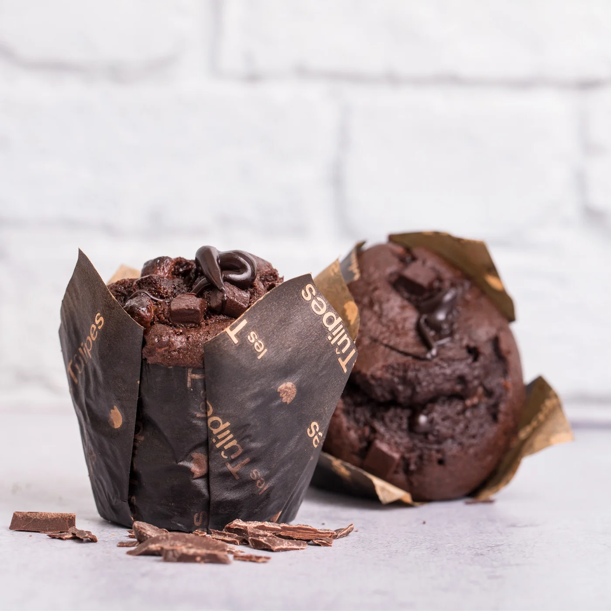

Muffins de chocolate

Los muffins de chocolate son una de las recetas más populares de la repostería. Son fáciles de preparar y se caracterizan por su intenso sabor y su textura suave. Puedes prepararlos para una celebración especial o simplemente para acompañar una taza de café o de té.